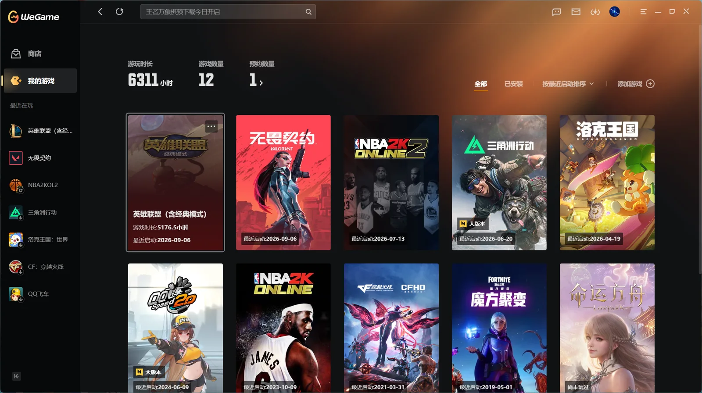
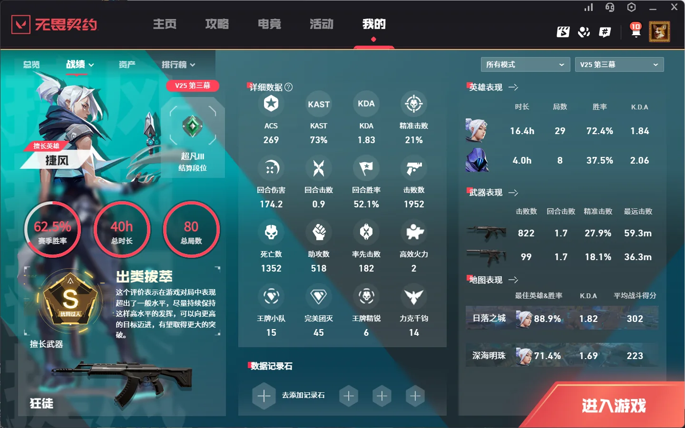
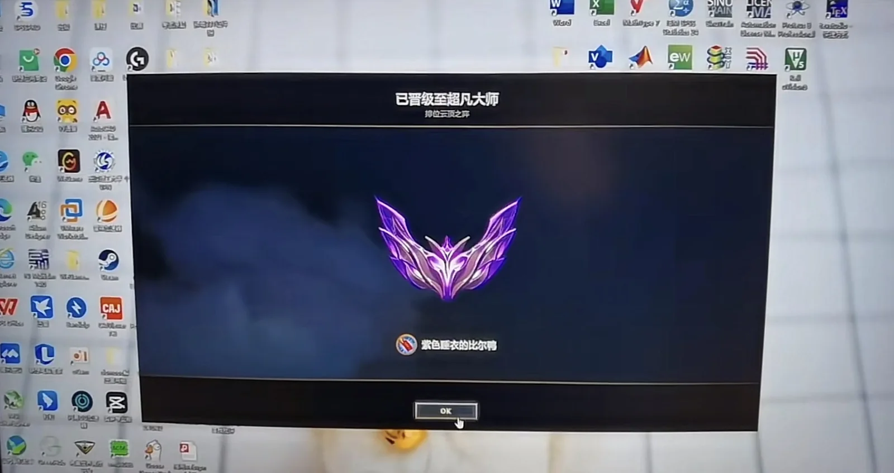
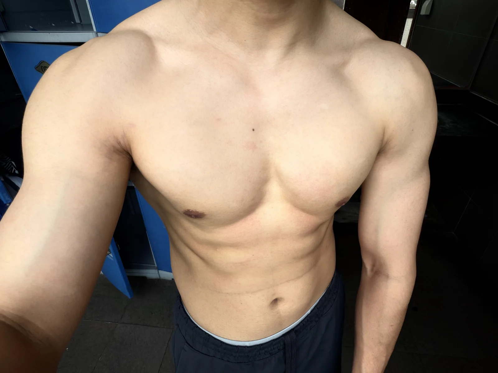

INTERESTS 01
我的兴趣
工作之外，我会把时间花在这些事情上。
游戏让我放松，也让我留意交互、性能与系统反馈如何共同影响体验；健身是长期习惯，AI 与具身智能则是我持续学习和动手验证的方向。
GAMES / PLAY
游戏
空闲时我会玩游戏，把它当作放松和切换思路的方式。除了交互、反馈和节奏，我也会留意帧率、网络延迟、匹配机制和客户端表现如何影响体验，习惯把直观感受拆成产品规则与技术约束来理解。
对我来说，游戏也是和朋友保持联系的一种方式。大家上线后会顺便聊聊近况、分享最近遇到的事，偶尔拌几句嘴再一起笑过去。比起输赢，我更享受这种轻松、自然的陪伴和交流。



FITNESS / TRAINING
健身
健身已经成为我比较稳定的生活习惯。我关注训练计划、动作质量和身体状态，也会记录阶段变化；相比短期冲刺，我更看重长期坚持和持续调整。

AI / EMBODIED INTELLIGENCE
AI 与具身智能
我会持续体验新出现的 AI 工具和产品，既关注它们解决了什么问题、交互是否自然，也会拆解模型能力、数据流、Agent 的实现方式与工程边界。同时也会跟进具身智能在机器人感知、决策和执行方面的发展。
除了日常学习和项目实践，我也会主动参加人工智能、智能产业与具身智能相关的展会和交流活动，了解真实产品、技术路线与行业进展，再把现场观察带回自己的产品判断和工程实践中。